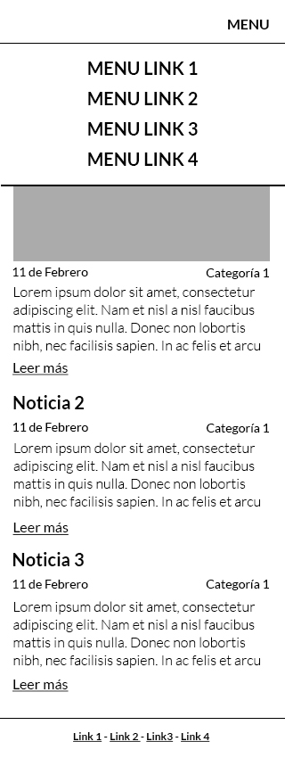
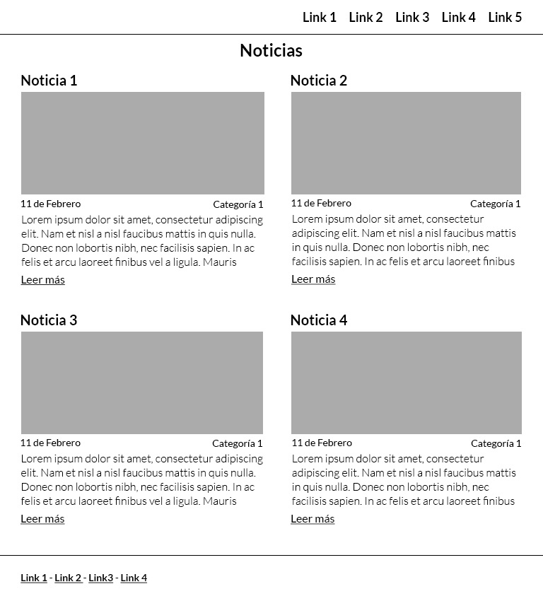
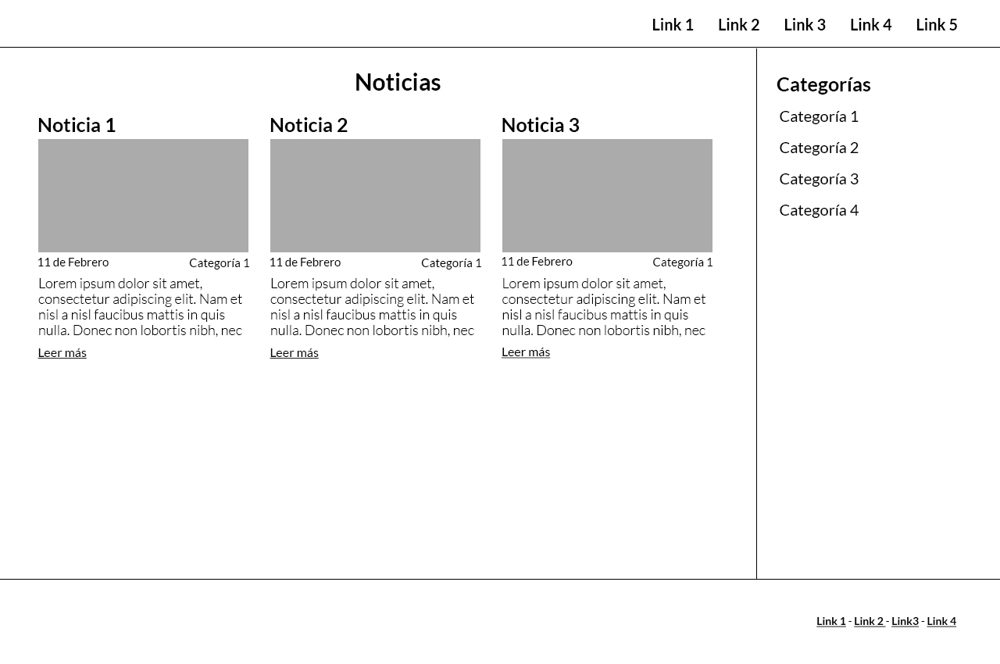

Junior Frontend Tests - News Site
For this test you need to create the HTML and CSS markup to recreate the following wireframes. These are the mobile, tablet and desktop views:
Mobile

Tablet

Desktop

Requirements
- Do not use any frontend framework. A plain index.html file is fine.
- Do not use any CSS library (Bootstrap, Tailwind, etc). We want to keep things simple.
- Do not use Sass or any other CSS preprocessor. We need good old plain CSS for this one.
Notes
Please keep in mind that we will do a couple of changes on the site as part of the review.
Good luck!